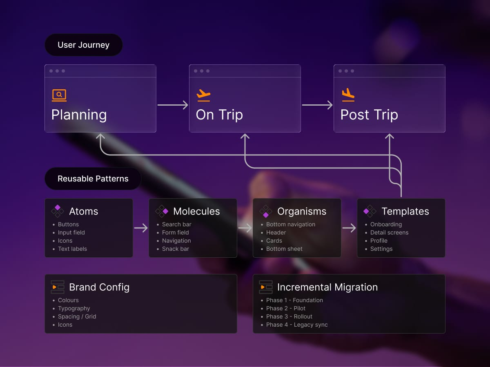
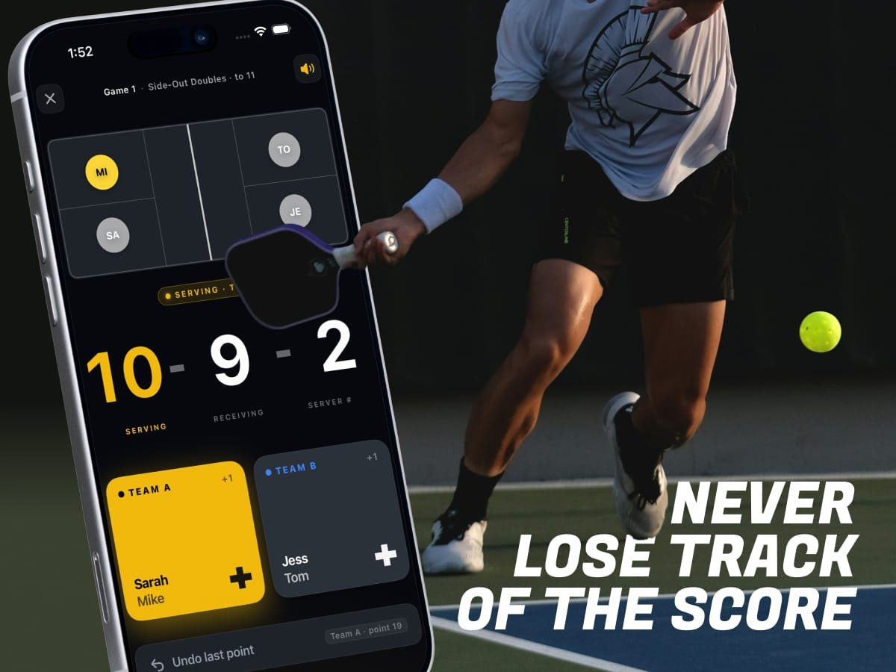
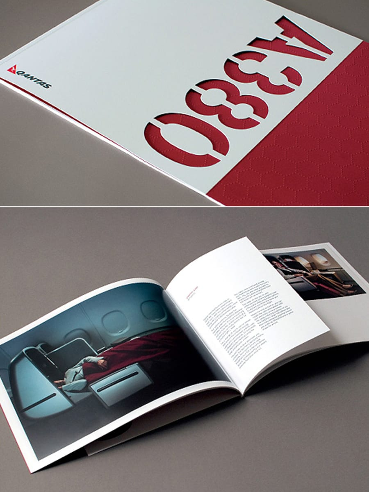
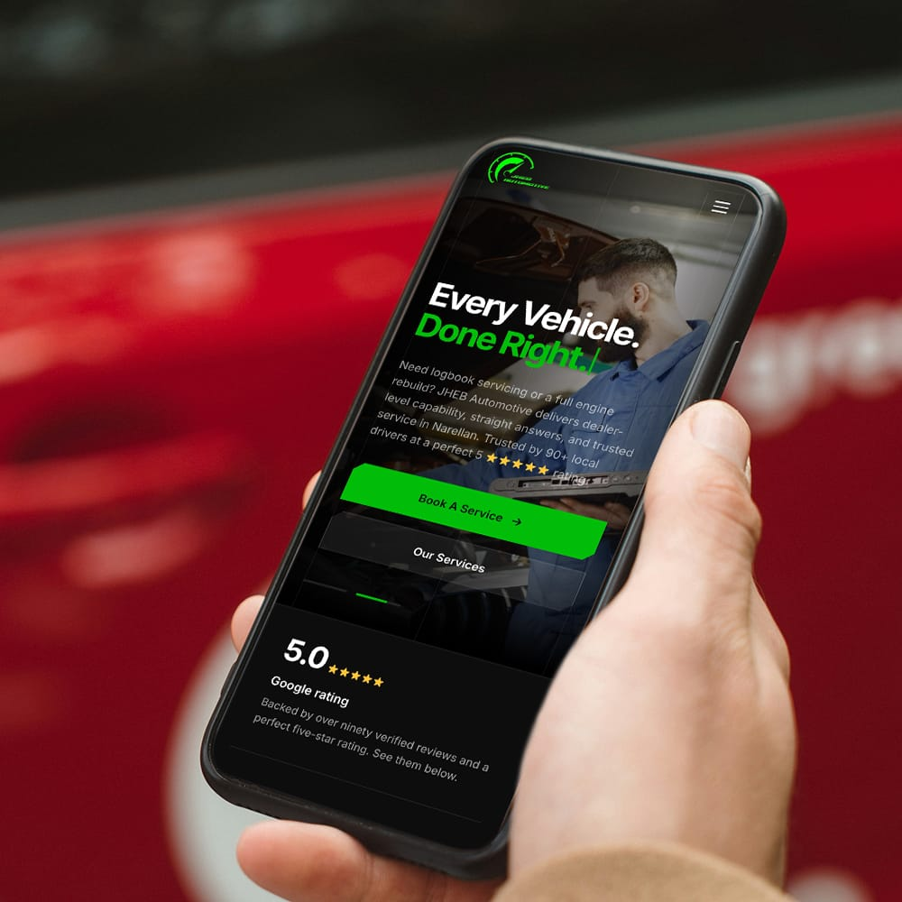
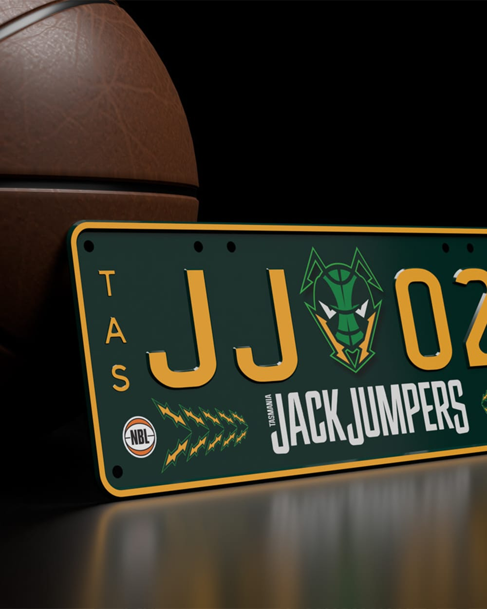
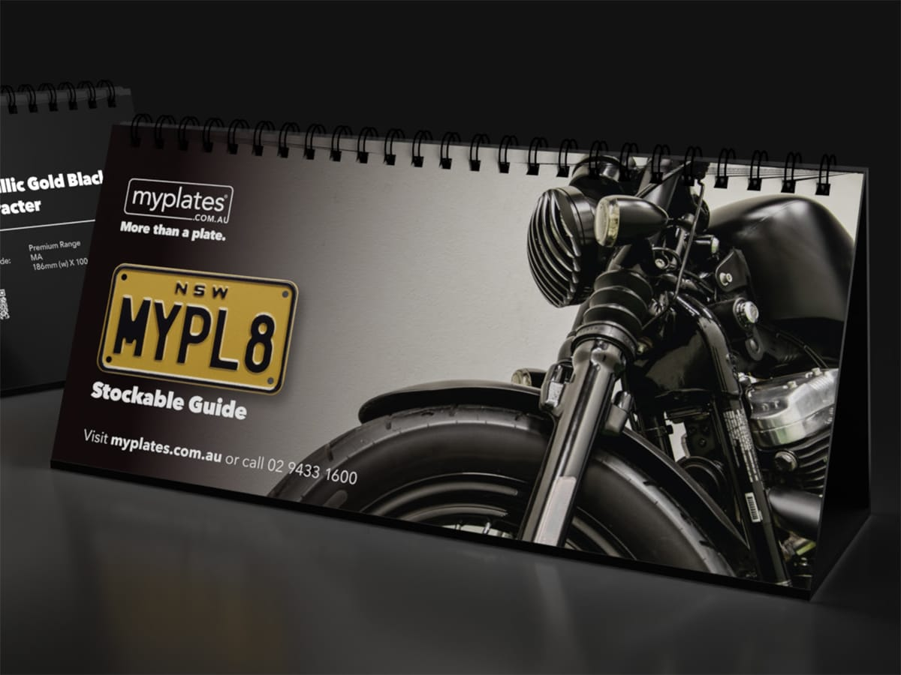
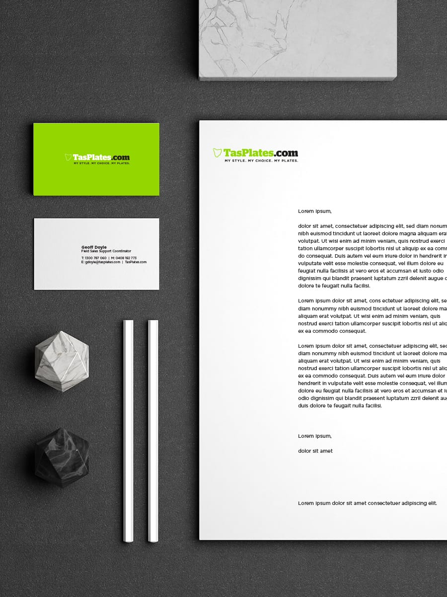

Strategic Lead Product Designer
I design digital products people can trust.
I'm Jonathan, a Strategic Lead Product Designer with 15+ years turning complex insurance and retail journeys into clear, accessible, scalable digital products across web and mobile. I pair user research and product strategy with design systems and close collaboration across product and engineering, simplifying complexity so teams can ship better, more consistent experiences with confidence.
Selected work
A selection of digital products, services, and systems shaped through strategy, research, design, and delivery.
Beyond product design
Creative and experimental work
A broader mix of mobile, brand, and visual projects exploring product thinking through different mediums.
Native mobile app · Branding strategy · 3D modelling · Design






How I work
I help teams turn complexity into clarity by connecting customer insight, business goals, and delivery realities.
Find the real problem
I use research, analytics, journey mapping, and stakeholder input to uncover what is really getting in the way for customers and the business, so teams can focus on the highest-value problem first.
Shape the right experience
From information architecture and flows to high-fidelity UI, I design accessible experiences backed by reusable design systems, balancing customer needs, commercial outcomes, and technical feasibility.
Help teams move with confidence
I facilitate alignment across product, engineering, and business stakeholders, creating the clarity needed to make decisions, reduce friction, and move work forward.
Improve what ships
I use evidence, experimentation, and performance signals to refine products over time, so delivery is not the end of the design process but the start of continuous improvement.
About
About me
I'm a Strategic Lead Product Designer with 15+ years delivering digital products and customer experiences across insurance and retail. My strength is simplifying complex problems into scalable, intuitive, accessible experiences, grounded in UX/UI, design systems, information architecture, and user research.
I bring a commercially aware, customer-centred approach to product delivery, partnering closely with Product, Engineering, Analytics, and business stakeholders to create alignment, improve delivery quality, and lift design capability over time. I'm at my best in agile, multidisciplinary teams across web, mobile, and service journeys.
- Design systems, components, and scalable UX/UI
- End-to-end product design (web, mobile, service)
- Product and customer experience strategy
- Information architecture and journey mapping
- User research, usability, and accessibility (WCAG)
- Interaction design and prototyping (Figma)
- Experimentation, A/B testing, and analytics
- Workshop facilitation and stakeholder alignment
- Agile delivery and design leadership
- AI-enabled and data-informed design
Experience
2022-Present
Lead Product Designer
Zurich Cover-More
- Lead UX/UI design across digital products and complex insurance journeys, from discovery to production-ready delivery.
- Developed a journey-led product-design framework: reusable patterns, per-brand configuration, measurement, and design governance.
- Contributed to consolidating Freely and Cover-More onto a shared React Native stack while preserving distinct brand expression.
- Drove a 22% increase in engagement via an AI-powered itinerary planner, with a 16% uplift in cross-platform conversions through research and KPI tracking.
2011-2022
Lead Product Designer
PML
- Directed end-to-end website redesigns across multiple brands, lifting online sales 32% through journey mapping and information architecture.
- Established an insight-to-action research practice, reducing bounce rates 24% through contextual inquiry, card sorting, and usability testing.
- Embedded A/B testing and experimentation into the design process, increasing conversion 21% with more evidence-based decisions.
- Reached a 93% on-time delivery rate through scalable design approaches, adaptable systems, and audience-aware content design.
2007-2011
Digital Design Manager
Pacific Brands
- Increased retail digital engagement 26% across major web and in-store touchpoints through a customer-led design approach.
- Accelerated user acquisition 17% across channels through behavioural analysis, journey optimisation, and quantitative experimentation.
- Supported a scalable CMS migration and improved interaction design production, reducing platform downtime 14% through detailed IA deliverables.
Education and training
RMIT · 2025
CX Strategy and Design
Customer experience strategy and design.
Charles Sturt University · 2011–2014
Master of Information Studies
Specialising in Information Architecture.
Nielsen Norman Group
UX certifications
Visual design, mobile UX, wireframing and prototyping, persuasive design.
Design Centre Enmore
Diploma in Design
Foundations in visual and interaction design.
Contact
Let's build something worth trusting.
Have a product, service, or customer journey that needs clarity? Tell me a little about what you're working on, and I'll get back to you.